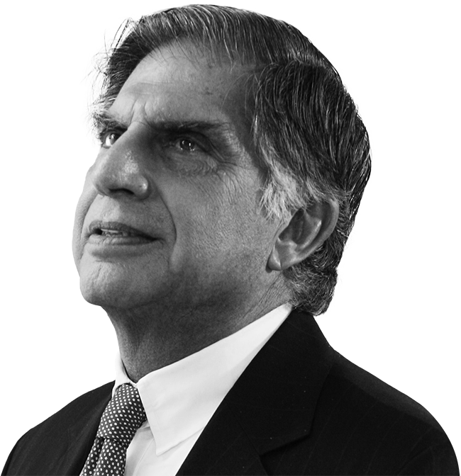

I don't believe in
taking right decisions.
I take decisions and then
make them right.

Ratan Tata was born on December 28, 1937, in Bombay, British India (now Mumbai, India).
He is the son of Naval Tata, who was adopted by the family of Sir Ratan Tata, the founder of the Tata Group.
Ratan Tata studied at the Cathedral and John Connon School in Mumbai
and graduated from Cornell University in the United States.
He joined the Tata Group in 1962 and worked in various companies of the group.
In 1991, Ratan Tata became the chairman of the Tata Group, succeeding his predecessor J.R.D. Tata.
Under Ratan Tata's leadership, the Tata Group expanded its business globally
and became one of the largest conglomerates in the world.
He oversaw major acquisitions of foreign companies by the Tata Group,
including the acquisition of Jaguar Land Rover from Ford Motor Company.
Ratan Tata is also known for his philanthropy and social initiatives, such as the Tata Trusts,
which work towards education, health, and rural development.
In 2012, Ratan Tata retired as the chairman of the Tata Group and was succeeded by Cyrus Mistry.
Ratan Tata has received several honors and awards, including the Padma Bhushan and Padma Vibhushan,
which are among the highest civilian awards in India.